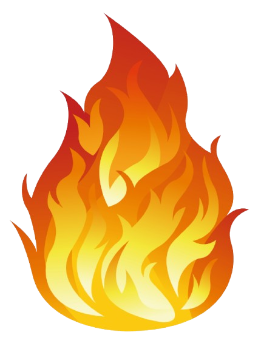

Uri ng sunog
- Class A : Ordinaryong Combustible kung saan ang kadalasang pinagmumulan nito ay mga kagamitan tulad ng pape, kahoy, plastic, damit at goma
.
- Class B: Ito ang uri ng sunog na kadalasang nagmumula sa flammable liquids o gas, combustible liquids, petroleum greases, tars, langis, mga pinturang nakabatay sa langis, solvents o pangtunaw, lacquers, at alkohol. Ilan sa mga halimbawa ng mga ito ay gasolina, kerosene, kemikal, LPG, paint thinners o pangpanipis ng pintura/panglinis ng mga kagamitang pangpintura.
- Class C : Ito ay ang mga Energized Electrical Equipment na isang uri ng sunog na kadalasang nagmumula sa mga bagay na kasalukuyang nakasaksak sa kuryente. Halimbawa nito ay ang labis na paglagay sa saksakan ng 00 kuryente, pag-overcharge ng mga elektrikal na kagamitan, pag-overheat ng appliances, pagkasira ng switches, panel boxes, at mga sirang kable o wires.
- Class D : Ito ay ang mga Combustible Metals ay uri ng sunog na nagmumula sa mga kagamitan na gawa sa metal gaya ng potassium, titanium, magnesium, at sodium na kadalasang nakikita sa mga industrial settings gaya ng manufacturing plants, laboratoryo, at pasilidad na gumagamit o nag-iimbak ng ganitong mga metal.
- Class K/F : Combustible Cooking Fluids naman ay uri ng sunog na nagmumula sa mga kagamitang pangluto gaya ng mantika at fats.
⇦bumalik sa pangunahing pahina